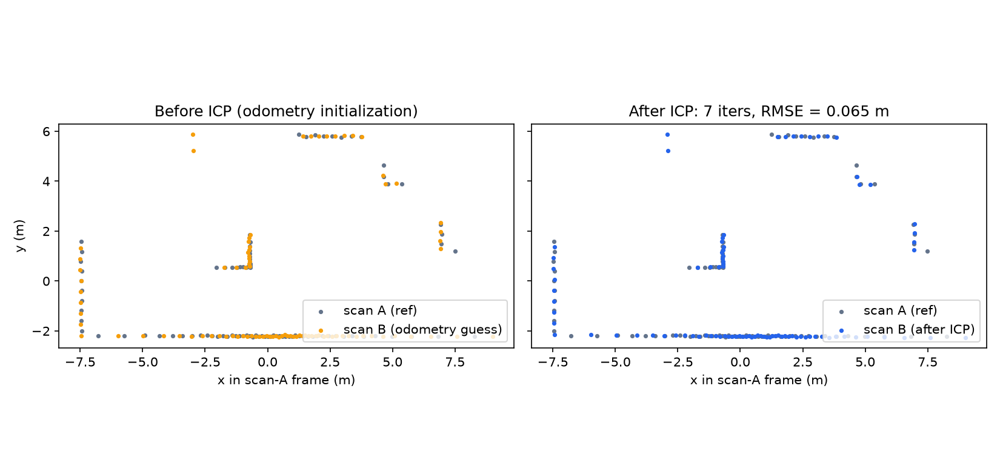

5.1问题定义
机器人在位置 A 打了一帧激光，得到点云 $A$；挪了半步又打一帧，得到点云 $B$。 两帧点云看到的是同一批墙——只是机器人的坐标系挪了。它们之间恰好差一个刚体变换：
求出这个 $T$，我们就知道"机器人从 A 到 B 实际动了多少"（相对位姿）—— 它比里程计准，因为激光测的是环境几何而不是轮子。问题是：$T$ 里 3 个未知数， 而点云只告诉你"两坨点长得很像"，没有任何一对点的显式对应。 ICP 的答案是把"未知对应"和"未知变换"拆开交替求解： 猜一个变换 → 推出对应关系 → 用对应关系解出更好的变换 → 循环。
5.2核心：最优刚体变换的闭式解
步骤②值得单独推导——它有一个漂亮的解析解，一行迭代都不用。 给定一一对应的点对 $(\mathbf{a}_i, \mathbf{b}_i)$，求 $R,\mathbf{t}$ 最小化：
第一步：平移分离。对 $\mathbf{t}$ 求导置零，立即得到 $\mathbf{t} = \bar{\mathbf{a}} - R\,\bar{\mathbf{b}}$（$\bar{\cdot}$ 为质心）—— 平移总是"把两个质心对齐"。代回原式，问题只剩旋转：
第二步：2D 特解。在 2D 里 $R(\theta)$ 只有一个自由度，展开 $\mathbf{b}^{\prime\top}R\mathbf{b}' = \cos\theta\,(\mathbf{a}'\!\cdot\!\mathbf{b}') + \sin\theta\,(\mathbf{a}'\!\times\!\mathbf{b}')$， 对 $\theta$ 求导置零，得到教科书级公式：
分子收集"旋转趋势"，分母收集"对齐程度"——几何意义一目了然。
一般情形（3D 或想要数值稳健）则用 SVD：构造互协方差
$H = \sum \mathbf{b}'_i\mathbf{a}_i^{\prime\top}$，SVD 分解 $H = U\Sigma V^\top$，
$R = UV^\top$（$\det<0$ 时翻转最后一列防镜像）。两者在 2D 完全等价，课程代码 icp.py 用的是 SVD 版（与主流实现一致）。
def best_fit_transform(A, B):
"""求 T 使 Σ‖T·aᵢ − bᵢ‖² 最小（一一对应已知时的闭式解）"""
centroid_A = A.mean(axis=0)
centroid_B = B.mean(axis=0)
H = (A - centroid_A).T @ (B - centroid_B) # 2×2 互协方差
U, S, Vt = np.linalg.svd(H)
R = Vt.T @ U.T
if np.linalg.det(R) < 0: # 防止解出"镜像"反射
Vt[-1, :] *= -1
R = Vt.T @ U.T
t = centroid_B - R @ centroid_A # 质心对齐的平移
return as_homogeneous(R, t)5.3完整算法与三个工程细节
把闭式解装进循环，加上三个工程细节，就是工业可用的 ICP：
def icp(ref_pts, cur_pts, init_pose=(0, 0, 0), max_iter=30,
tol=1e-5, trim_ratio=0.8):
"""把 cur_pts 对齐到 ref_pts。init_pose 来自里程计（很重要！）"""
ref_tree = cKDTree(ref_pts) # 细节①：KD 树加速最近点查询
T = se2_to_matrix(init_pose)
prev_err = None
for it in range(max_iter):
transformed = apply(T, cur_pts) # 用当前估计变换 cur
dist, idx = ref_tree.query(transformed, k=1)
order = np.argsort(dist)
keep = order[: int(len(order) * trim_ratio)] # 细节②：修剪 20% 最差点
rmse = np.sqrt(np.mean(dist[keep] ** 2))
T_delta = best_fit_transform(cur_pts[keep], ref_pts[idx[keep]])
T = T_delta @ T # 细节③：左乘累积增量
if prev_err is not None and abs(prev_err - rmse) < tol:
break # 收敛：RMSE 不再下降
prev_err = rmse
return T, rmse, it + 1- 细节① KD 树：暴力最近点是 $O(N^2)$（120×120=1.4 万次距离比较，其实也不慢）；
KD 树把它降到 $O(N\log N)$，点云上万时必需。scipy 的
cKDTree一行搞定。 - 细节② 修剪（trimming）：按距离排序丢掉最差的 20% 点对。 它们往往是外点——动态障碍（人走过）、玻璃反射、落灰的镜面。不修剪的话几个坏点就能把整帧配准带歪。
- 细节③ 增量左乘：每轮求出的 $T_\Delta$ 是"修正量"，累积必须用矩阵乘法 $T \leftarrow T_\Delta T$，而不是把角度和坐标分别相加——角度直接相加在多次迭代后会引入数值漂移。
5.4ICP 的软肋：局部极小与退化解
在上方仿真里做两个实验：
- 小幅扰动（0.3 m）：ICP 稳稳收敛，RMSE ≈ 0.03–0.06 m（受光束噪声和采样密度限制，不可能为 0）。
- 大幅扰动（1.2 m 以上）：红线（对应关系）明显"拧着"，ICP 收敛到错误位置且 RMSE 高居不下—— 这就是局部极小。每一步都在"最小化自己眼中的误差"，但对应关系是错的，越努力越错。
实践中给 ICP 好初值的三个来源：里程计（相邻帧，误差 < 5 cm——课程采用）、 栅格相关性搜索（暴力扫一圈所有可能的平移旋转，打分取优，Cartographer 的做法）、 NDT/特征法（先对齐分布或角点特征）。另外注意一个几何陷阱： 长直走廊会让 ICP 沿墙"滑动"——沿墙方向没有任何几何特征约束平移， 解虽然收敛了但沿墙的位置是任意的。房间多面墙夹击能缓解；真正的解法叫 point-to-line ICP 或特征约束。

把 B 帧所有点缩到很近的一团也能让 RMSE 变小（退化解）。所以回环检测（第 8 章）判断 "匹配是否可信"时，除了 RMSE 还要看匹配上的点数是否充足、以及初值与结果的一致性。 工业实现还会检查协方差条件数——"数据是否真的约束了 3 个自由度"。
5.5ICP 在课程流水线里的位置
- 相邻关键帧配准（第 8 章）：初值来自里程计，输出"运动边"；
- 回环验证：老地方的两帧扫描做 ICP，RMSE 低到 0.12 m 以内才算"确认回环"， 输出"回环边"；
- 每条边的 RMSE 还会转化成信任权重（信息矩阵）：RMSE 越大，这条边在位姿图里说话越没分量。
- 能写出 ICP 三步循环并解释"为什么每轮 RMSE 单调不增"
- 能推导 2D 闭式旋转公式（至少复述 atan2(Σ×, Σ·) 的构造）
- 在仿真里亲手制造过一次局部极小，能解释它为何发生
- 说出修剪（trim）、KD 树、增量左乘各自解决什么工程问题
练习 1 · 把 trim 关掉看看会发生什么
icp.py 里 trim_ratio=0.8 改成 1.0，
并人为给某帧激光加 5 个"飞点"（在 run_slam.py 的 scans[i][3:8] 上加 5 米）。
重跑：不修剪时这些点强行把整个变换拽偏十几厘米；恢复 0.8 后完全无感。
这就是"鲁棒统计"的价值——最小二乘对离群点零容忍，修剪等价于把损失函数从 L2 换成截断 L2。